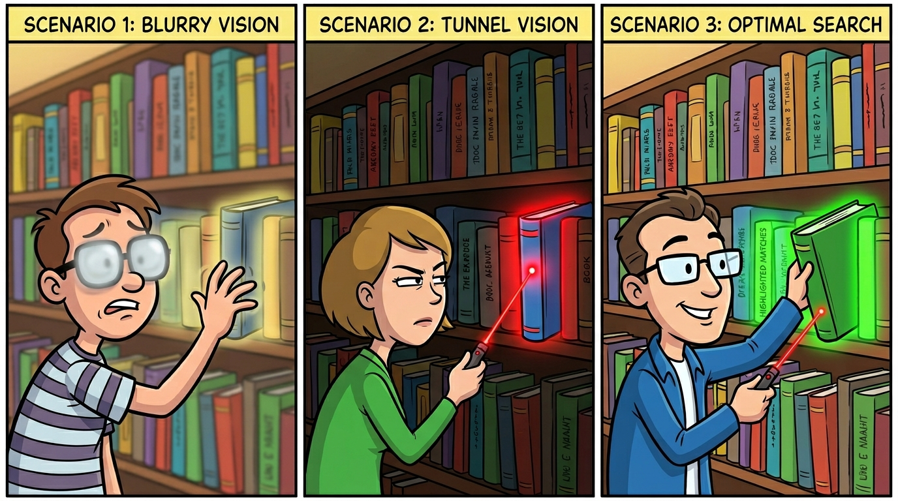
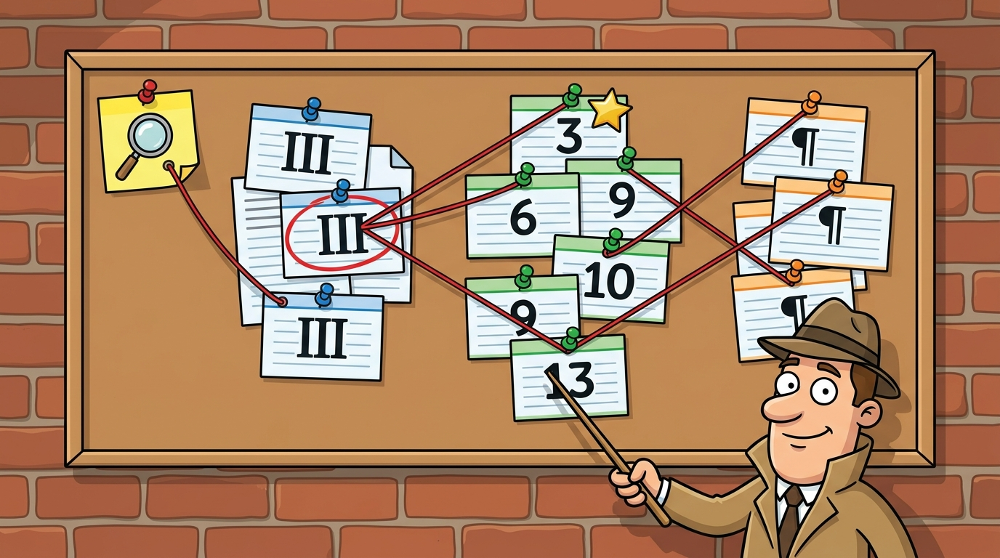

Why Semantic Search Alone Fails on Legal Text (And How Hybrid Search Fixed It)
- 🏷 rag
- 🏷 hybrid-search
- 🏷 vector-search
- 🏷 bm25
- 🏷 qdrant
- 🏷 golang
- 🏷 eu-ai-act
I was building a RAG pipeline to classify AI systems under the EU AI Act — feed in a plain-English description of your AI system, get back the risk tier, the relevant articles, and a compliance checklist with citations. Classification was working perfectly. All 8 test scenarios nailed the correct risk tier.
But the confidence scores were stuck at 36%.
The problem wasn’t the LLM. It wasn’t the prompts. It was the retrieval. And the fix taught me something worth sharing about when semantic search falls short — and when adding keyword search actually makes things worse.
The Setup: A 5-Stage RAG Pipeline Over Legal Text
Quick context on what this pipeline does. It’s a 5-stage chain, all in Go:
- Classifier — LLM reads the user’s description, infers the domain (employment, biometrics, etc.) and candidate risk tiers
- Retriever — Multi-hop search across a Qdrant vector database of ~300 chunks of EU AI Act text
- Obligation Mapper — LLM maps the retrieved legal text to specific compliance obligations
- Confidence Scorer — Verifies each obligation is actually grounded in the retrieved text (not hallucinated)
- Checklist Generator — Produces a structured compliance checklist with article citations
The vector database holds the full EU AI Act — 113 articles, 180 recitals, 13 annexes — chunked at the article level with cross-reference metadata linking them together.
Stage 2 is where the problem lived.
Why Dense-Only Search Fails on Legal Text
The initial retriever used pure semantic search: embed the query with text-embedding-3-small, find the closest vectors by cosine similarity, return the top results. Standard stuff.
Here’s why that doesn’t work well for legal text. Consider a user query like:
“An AI tool that screens CVs and ranks job candidates for recruitment”
The relevant legal text in Annex III of the EU AI Act says:
“AI systems intended to be used for making decisions affecting terms of work-related relationships, the promotion or termination thereof, to allocate tasks based on individual behaviour, personal traits or characteristics…”
These are semantically related — both about employment. But the vocabulary is completely different. The user says “screens CVs” while the law says “decisions affecting terms of work-related relationships.” Dense embeddings capture the general theme but produce a moderate similarity score, not a strong one.
It gets worse with precise legal terminology. The EU AI Act uses specific phrases that function as terms of art:
- “biometric categorisation”
- “real-time remote biometric identification”
- “profiling of natural persons”
- “social scoring”
These exact phrases carry precise legal meaning. When a user’s query contains one of these terms, the retriever should match hard. But dense embeddings treat these as just more words in the vector space — their signal gets diluted across hundreds of dimensions.
The Cascade Effect
Weak retrieval at Stage 2 doesn’t just mean bad search results. It cascades through every downstream stage:
- Obligation Mapper receives less relevant context, so the LLM starts inferring obligations rather than grounding them in retrieved text
- Confidence Scorer sees low similarity scores and poor corroboration between retrieved chunks and mapped obligations — so it scores low
- Checklist output looks reasonable (the LLM is doing heavy lifting) but the citation backing is thin
The pipeline was producing correct answers for the wrong reasons. The LLM was papering over bad retrieval with its own knowledge. That’s exactly the failure mode you don’t want in a legal compliance tool.
The Fix: Adding BM25 Sparse Vectors
The idea is simple: instead of searching one way, search two ways and combine the results.
Dense search finds documents that mean similar things. “CV screening tool” and “employment decision-making system” end up near each other in vector space. Good at understanding intent, bad at matching specific terms.
Sparse search (BM25) finds documents that share vocabulary. If the query contains “biometric” and the legal text contains “biometric,” that’s a direct hit. Good at matching specific terms, bad at understanding paraphrased intent.
Hybrid search: Run both, then combine the ranked results using Reciprocal Rank Fusion (RRF).

The BM25 Encoder in ~90 Lines of Go
No SPLADE. No neural sparse encoder. No Python dependency. For a corpus of ~300 legal documents, a simple BM25 encoder is more than enough. Here’s the core of it:
type SparseEncoder struct {
docFreq map[uint32]int // term hash -> docs containing it
numDocs int
vocabMax uint32 // hash space size (1M buckets)
}
// Fit computes document frequencies from the full corpus.
func (e *SparseEncoder) Fit(texts []string) {
e.numDocs = len(texts)
for _, text := range texts {
seen := map[uint32]bool{}
for _, token := range tokenize(text) {
h := hashToken(token, e.vocabMax)
if !seen[h] {
e.docFreq[h]++
seen[h] = true
}
}
}
}
// Encode produces a sparse vector for a single text.
func (e *SparseEncoder) Encode(text string) SparseVector {
tokens := tokenize(text)
tf := map[uint32]int{}
for _, token := range tokens {
tf[hashToken(token, e.vocabMax)]++
}
const k1, b = 1.2, 0.75
avgDL := 200.0 // approximate average doc length for legal text
dl := float64(len(tokens))
var indices []uint32
var values []float32
for h, count := range tf {
df := e.docFreq[h]
if df == 0 {
df = 1
}
idf := math.Log(float64(e.numDocs-df)+0.5) /
float64(df) + 0.5 + 1.0
tfNorm := (float64(count) * (k1 + 1)) /
(float64(count) + k1*(1-b+b*dl/avgDL))
if weight := idf * tfNorm; weight > 0 {
indices = append(indices, h)
values = append(values, float32(weight))
}
}
return SparseVector{Indices: indices, Values: values}
}
A few things to note:
- FNV hashing instead of a vocabulary map. Tokens are hashed to uint32 indices within a 1M bucket space. Some collisions, but it keeps memory flat and avoids maintaining a separate vocabulary file. For ~300 documents, this is fine.
- The encoder is fitted on the full corpus during ingestion. It needs to know which terms are common (“shall”, “system”, “provider”) versus distinctive (“biometric”, “profiling”, “creditworthiness”). The fitted state serializes to JSON for reuse at query time.
avgDL = 200is hardcoded. Legal articles are verbose. This constant controls BM25’s length normalization — it’s a heuristic, not a tuned parameter.- Stop words include “shall”. Legal text is full of “shall” — it appears in almost every article but carries zero discriminative value.
The Hybrid Search Query
Each document in Qdrant is stored with two named vectors: dense (1536-dim embedding) and sparse (BM25). At query time, Qdrant’s Query API handles the fusion server-side:
func (s *Searcher) HybridSearch(ctx context.Context, collection string,
denseVector []float32, sparse *SparseQuery, limit uint64) ([]SearchResult, error) {
prefetch := []*pb.PrefetchQuery{
{
Query: pb.NewQueryDense(denseVector),
Using: &denseUsing,
Limit: &prefetchLimit, // 100
},
}
if sparse != nil && len(sparse.Indices) > 0 {
prefetch = append(prefetch, &pb.PrefetchQuery{
Query: pb.NewQuerySparse(sparse.Indices, sparse.Values),
Using: &sparseUsing,
Limit: &prefetchLimit, // 100
})
}
points, err := s.client.Query(ctx, &pb.QueryPoints{
CollectionName: collection,
Prefetch: prefetch,
Query: pb.NewQueryFusion(pb.Fusion_RRF),
Limit: &limit,
WithPayload: pb.NewWithPayload(true),
})
// ...
}
Both dense and sparse searches prefetch 100 candidates each. RRF then fuses and re-ranks them. A document that ranks high in both gets the strongest combined score. A document that ranks high in only one still appears, but lower.
The RRF formula is straightforward: for each document, sum 1/(k + rank) across both result lists. The constant k (Qdrant uses 60) prevents top-ranked results from dominating too aggressively.
Multi-Hop Retrieval: Following the Cross-Reference Chain
Hybrid search is only Hop 1 of the retrieval. Legal compliance questions require following a chain of cross-references:
- Hop 1 — Hybrid search annexes: “CV screening” matches Annex III §4 (employment)
- Hop 2 — Follow cross-references to articles: Annex III §4 links to Article 6, which links to Articles 9-15 (the actual obligations)
- Hop 3 — Follow cross-references to recitals: Articles link to recitals that provide interpretive context

func Retrieve(ctx context.Context, searcher *rag.Searcher,
embedFn EmbedFn, sparseEmbedFn SparseEmbedFn,
classification *ClassifyResult, description string) ([]RetrievedChunk, error) {
// Enrich query with classification context
query := fmt.Sprintf("%s (domain: %s, risk: %s)",
description, classification.Domain,
strings.Join(classification.RiskTiers, ", "))
// Hop 1: Hybrid search annexes
annexResults, _ := searcher.HybridSearch(ctx, annexCollection, vector, sparse, 5)
articleIDs := map[string]bool{"article_3": true} // Always include definitions
for _, r := range annexResults {
for _, ref := range r.CrossRefs {
if strings.HasPrefix(ref, "article_") {
articleIDs[ref] = true
}
}
}
// Hop 2: Lookup linked articles
articleResults, _ := searcher.LookupByDocIDs(ctx, articleCollection, artIDs)
// Hop 3: Lookup linked recitals
recitalResults, _ := searcher.LookupByDocIDs(ctx, recitalCollection, recIDs)
// Each chunk is tagged with its hop number for downstream weighting
// ...
}
Two things worth highlighting:
- Article 3 (definitions) is always injected. Legal text references defined terms constantly. Without the definitions, the LLM misinterprets words that have precise legal meanings.
- The query is enriched with classification context. Instead of searching with just the raw user description, the retriever appends the domain and risk tier from Stage 1. So a query about “CV screening” becomes “CV screening (domain: employment, risk: HIGH_RISK)” — which helps the dense search zero in on employment-related annexes.
The Results
Classification accuracy was unchanged — 8/8 correct. That’s expected since classification happens before retrieval.
The confidence scores told the real story:
| Scenario | Before (dense only) | After (hybrid) | Change |
|---|---|---|---|
| CV Screening | ~36% | 51% | +15pp |
| Education AI | ~36% | 51% | +15pp |
| Biometric ID | ~36% | 50% | +14pp |
| Predictive Policing | ~36% | 30% | -6pp |
Three out of four improved substantially. Average confidence went from ~36% to ~46%.
But look at that last row.
When Hybrid Search Makes Things Worse
The predictive policing scenario actually scored lower after adding hybrid search. This is the most interesting result.
The query was: “predictive policing system that identifies high-crime areas and suggests patrol routes.”
The relevant Annex III text says: “AI systems intended to be used by law enforcement authorities… for making assessments of risks of natural persons for offending or reoffending.”
The words “predictive,” “policing,” “crime areas,” and “patrol routes” don’t appear anywhere in the legal text. There’s essentially zero vocabulary overlap.
So what happened? Sparse search returned no strong keyword matches. But through RRF fusion, those non-matches still influenced the final ranking — they diluted the dense search results that were finding the right documents semantically. Dense search alone was doing better for this paraphrased query.
This is a useful lesson: hybrid search is not universally better. It helps most when the query and the documents share vocabulary — exact legal terms, domain-specific phrases. It helps less (or actively hurts) when the query is a colloquial paraphrase of formal language.
What I Took Away
Dense-only search is insufficient for legal text. Legal documents use precise, formal language that users often paraphrase informally. But when exact legal terms appear in queries, dense search underweights them.
BM25 sparse vectors are cheap to build. The entire encoder is ~90 lines of Go. No neural model, no Python dependency. For a small corpus of structured documents, simple TF-IDF with BM25 weighting is plenty.
RRF fusion is simple and effective — no tuning required. Qdrant handles it server-side. I didn’t have to normalize scores or tune weights between dense and sparse.
But hybrid search can hurt paraphrased queries. When there’s no vocabulary overlap between query and document, sparse search adds noise. The mitigation I’m exploring: weighted RRF that gives dense search higher weight (say 0.7/0.3 instead of equal), plus query expansion that enriches the user’s colloquial description with formal legal terms before the sparse search runs.
Confidence scores at 51% are honest, not broken. The scores are moderate because the Confidence Scorer only accepts evidence from retrieved chunks — it won’t verify an obligation using its own training knowledge. That’s by design. In a legal tool, conservative confidence that says “I’m not sure, check with a lawyer” is better than a confident hallucination.
The retriever is one piece of a larger system. The code is part of an open-source EU AI Act compliance navigator I’m building — an agentic RAG pipeline exposed as both a web app and an MCP server, so AI agents can check their own regulatory status during development. More on the full architecture in a follow-up post.